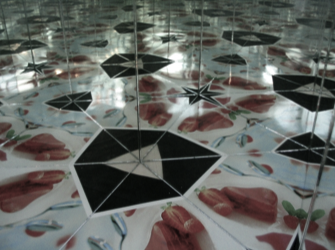

It is also possible to arrange three mirrors such that the angle between
each pair is a divisor of 180°. If in addition all three mirror planes are perpendicular to an object plane then there are exactly three possibilities to do so:
(60°, 60°, 60°), (90°, 45°, 45°), (90°, 60°, 30°)
The reason for this is that the angle sum in a triangle is always 180°.
Such a kaleidoscope generates patterns that seamlessly fill the entire plane.
In the simulation on the right you can generate and observe such a reflection pattern. By moving the large slider one can control the number of
mirror images that are added to the picture. Moving the points allows for
controlling the positions of the reflected objects and of the kaleidoscopes.
To further explore: You will find more explanations on reflections and kaleidoscopes in the program iOrnament for iPhone and iPad. You can also create your own ornaments.
Link: www.science-to-touch.com/iOrnament
|

|
Glimpses into real kaleidoscopes.